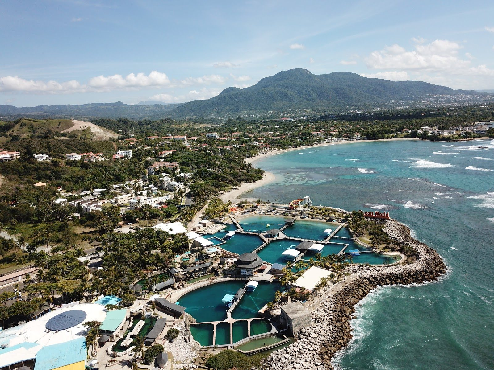

Taino Bay → Cofresí
Taino Bay está en la propia Puerto Plata, así que el trayecto a Cofresí sale hacia el oeste de la ciudad por la carretera de la costa. Te recibimos afuera de la puerta de la terminal.

Cofresí · Puerto Plata · República Dominicana
La zona hotelera al oeste de Puerto Plata, construida alrededor de una cala y un parque marino. Tu hotel probablemente está detrás de una garita, así que tomamos el nombre al reservar y te recibimos en tu lobby — a un precio acordado antes de que salgas de casa.
La versión corta
Cofresí es una zona de hoteles y villas en la costa justo al oeste de la ciudad de Puerto Plata, en la provincia de Puerto Plata. Se conoce sobre todo por ser la sede del parque Ocean World, y comparte este tramo de costa con Costambar, un barrio residencial más tranquilo con su propia playa calmada. Los dos entran en la misma tarifa. SG Caribbean Transfers & Tours hace transfers privados puerta a puerta desde el aeropuerto Gregorio Luperón (POP) a Cofresí y Costambar por un precio fijo de US$48.50 para 1 a 6 pasajeros, sin pago por adelantado: le pagas a tu chofer al llegar, en efectivo o por PayPal, Cash App o Zelle.
Llegando en avión
Puerto Plata es el aeropuerto de esta costa, y para el que damos precio fijo. Los demás están al otro lado de la cordillera o del país — conviene saberlo antes de comprar un vuelo barato al aeropuerto equivocado.
| Aeropuerto | Código | Precio fijo |
|---|---|---|
| Puerto Plata — Gregorio Luperón Intl. | POP | US$48.50 |
| Santiago — Cibao Intl. | STI | US$98.50 |
| Samaná — El Catey Intl. | AZS | A pedido |
| Santo Domingo — Las Américas Intl. | SDQ | US$219 |
| Punta Cana Intl. | PUJ | US$425 |
Suma US$5 por pasajero por encima de seis. Los US$48.50 cubren tanto Cofresí como Costambar, incluidas las comunidades cerradas — dinos el nombre del hotel o la villa al reservar. Todos los precios de la tabla están confirmados y se fijan por escrito antes de viajar; solo la tarifa desde Samaná se sigue cotizando a solicitud, porque no vamos a poner una suposición en una página pública. Los precios son por vehículo, no por persona.
Basta un mensaje de WhatsApp — sin cuenta, sin formulario, sin datos de tarjeta. Dinos cuántas maletas vienen contigo y mandamos el vehículo correcto. Te respondemos con el precio confirmado por escrito.
Si aterrizas dos horas tarde, la recogida se mueve dos horas. Tu chofer espera sin costo extra — los retrasos son problema nuestro, no tuyo.
Tu chofer te recibe adentro con un cartel, te ayuda con el equipaje y te lleva a tu hotel, villa o apartamento en Cofresí. Pide una parada en el supermercado o el cajero y no cuesta nada extra.
Llegando en crucero
Amber Cove está en la bahía siguiente a Cofresí, lo que hace de este el trayecto muelle-playa más corto de toda la costa — y el medio día más fácil si tu barco atraca ahí.
Taino Bay está en la propia Puerto Plata, así que el trayecto a Cofresí sale hacia el oeste de la ciudad por la carretera de la costa. Te recibimos afuera de la puerta de la terminal.
Amber Cove está en Maimón, la bahía inmediatamente al oeste de Cofresí. Si tu barco atraca aquí, Ocean World y la playa de Cofresí son lo más cercano de la costa a tu pasarela.
Una escala típica en Puerto Plata dura de 8 a 9 horas. Desde Amber Cove este es el trayecto más corto que hacemos, así que casi toda la escala es tuya en tierra — suficiente para Ocean World y aun así un almuerzo sin prisa. Planificamos cada día de crucero hacia atrás desde tu hora de regreso a bordo y te devolvemos al muelle con margen, nunca justo.
Por qué reservarnos
La mayor parte de Cofresí está detrás de una garita, y ahí es donde las opciones baratas se caen: un shuttle compartido deja la van entera en una sola entrada. Nosotros tomamos el nombre del hotel al reservar y te llevamos hasta tu propio lobby.
| Lo que importa | SG Caribbean | Taxi del aeropuerto | Shuttle compartido | Carro de alquiler |
|---|---|---|---|---|
| Precio | Fijo y confirmado por escrito antes de viajar | Se negocia en la acera, a menudo más caro de noche | Barato por asiento, pero normalmente por persona | Tarifa diaria más seguro, combustible y parqueo |
| Si el vuelo se retrasa | Seguimos el número de vuelo y movemos la recogida — sin cargo extra | El que quede en la parada a esa hora | La van normalmente se va sin ti | El mostrador puede estar ya cerrado |
| Quién va en el vehículo | Solo tu grupo, en una van privada con aire | Solo tu grupo | Quien más haya reservado ese viaje | Tú, manejando |
| Equipaje y maletas extra | Dinos cuántas son y mandamos un vehículo donde quepan — sin recargo | Depende por completo del carro que aparezca | A menudo se rechazan o se cobran como asiento extra | Solo si reservaste el tamaño de carro correcto |
| Pago | Efectivo, PayPal, Cash App o Zelle al llegar — nada por adelantado | Efectivo, tarifa acordada en el momento | Normalmente prepago en línea | Tarjeta, más un depósito de garantía retenido |
| Sillas de niño | Gratis — dinos las edades y van instaladas antes de la recogida | Rara vez disponibles | Rara vez disponibles | Un extra de pago |
Otra cosa que no cabe en una tabla: vivimos aquí. Saul, Sariel, Luis y Leuris manejan esta costa todos los días, hablan inglés y español, y te van a decir con honestidad qué playa vale tu tarde.
Una vez que estás aquí
Cofresí es pequeño y sobre todo residencial en cuanto sales de la zona hotelera. Casi todo lo que hay que hacer está o en su propia playa o un poco de vuelta hacia Puerto Plata.
La razón por la que la mayoría ha oído hablar de Cofresí: un parque marino frente a la playa con encuentros con delfines, leones marinos y tiburones, un santuario de aves y un recorrido de bosque tropical. Es el día familiar estándar de esta costa, y está aquí mismo en vez de a una excursión de distancia.
Una cala pequeña con los hoteles detrás y unos cuantos chiringuitos en la arena. No es la playa más grande de la costa, pero está protegida, es fácil bañarse y queda a unos treinta segundos de donde te estés quedando.
El vecino residencial: villas, condominios y una playa larga, poco profunda y muy tranquila que se llena de familias dominicanas los fines de semana. Más silencioso que Cofresí y favorito de quienes vienen por temporadas largas.
La ciudad de al lado, de vuelta al este por la carretera de la costa: la Fortaleza San Felipe, el centro victoriano, el Malecón y el teleférico al Pico Isabel de Torres. Ver la guía completa de Puerto Plata.
El otro conjunto hotelero de esta bahía, al otro lado de Puerto Plata, con un campo de golf en medio. Conviene conocerlo sobre todo para no confundir los dos al reservar hotel.
Pozas de piedra caliza que subes y luego bajas saltando y deslizándote, tierra adentro desde este tramo de costa. La excursión más pedida desde cualquiera de los hoteles de aquí.
En la costa norte de República Dominicana, en la provincia de Puerto Plata, sobre la carretera de la costa inmediatamente al oeste de la ciudad de Puerto Plata. Ocean World está en su frente de playa, el muelle de crucero Amber Cove está en la bahía siguiente en Maimón, y la playa residencial de Costambar queda entre Cofresí y la ciudad.
US$48.50 solo ida, por vehículo, para 1 a 6 pasajeros. Cada pasajero por encima de seis suma US$5. Ese precio es fijo y se confirma por escrito antes de viajar — sin tarifa dinámica, sin recargo nocturno y sin recargo por equipaje.
El Aeropuerto Internacional Gregorio Luperón (POP) en Puerto Plata — la misma carretera de la costa une los dos, y es el aeropuerto que usa casi todo visitante de aquí. Santiago (Cibao, STI) es la alternativa, tierra adentro más allá de la cordillera.
Sí, y lo hacemos con regularidad — pero los dos están al otro lado del país y significan varias horas de carretera. Los cotizamos a pedido en vez de publicar una cifra, porque solo publicamos precios confirmados. Pregunta por WhatsApp y recibes un número fijo, y una duración honesta, el mismo día.
Ambos son transfers privados desde el puerto, y Amber Cove es el muelle de crucero más cercano a cualquier playa de esta costa — está en la bahía de al lado. Taino Bay está en la ciudad de Puerto Plata, así que ese trayecto sale hacia el oeste. Te recibimos afuera de la puerta de la terminal y planificamos el día hacia atrás desde la hora de regreso a bordo de tu barco.
No. No hay servicio de Uber ni Lyft en Cofresí, ni en este tramo de la costa. Tus opciones realistas son un transfer privado reservado con antelación, un taxi local negociado en el momento, o un motoconcho para trayectos cortos dentro del pueblo.
Cofresí es el lado hotelero: hoteles, chiringuitos y Ocean World en una cala pequeña. Costambar es residencial — villas y condominios alrededor de una playa larga, poco profunda y muy tranquila, popular entre familias dominicanas los fines de semana y entre quienes se quedan meses en vez de una semana. Son vecinos en el mismo tramo de costa y nuestra tarifa cubre cualquiera de los dos.
No. No se paga nada por adelantado ni se piden datos de tarjeta. Le pagas a tu chofer al llegar, en efectivo (dólares o pesos dominicanos) o por PayPal, Cash App o Zelle. La reserva se confirma por mensaje, no con un pago.
Sí. Dinos más o menos a qué hora quieres que te recojamos y volvemos por ti — no estás pagando a un chofer por quedarse en el parqueo todo el día. Si te quedas en el propio Cofresí, el parque está en tu puerta; desde cualquier otro punto de la costa lo hacemos como ida y vuelta.
Sí — trabajamos 24 horas al día, todos los días del año. Los vuelos a Puerto Plata llegan y salen a horas incómodas, y una salida antes del amanecer hacia el aeropuerto es una mañana normal para nosotros. Manda la hora del vuelo y habrá un chofer afuera.
Mándanos tu número de vuelo, la fecha de llegada y cuántos viajan. Recibes un precio fijo por escrito y un chofer esperando en la salida con tu nombre en un cartel.